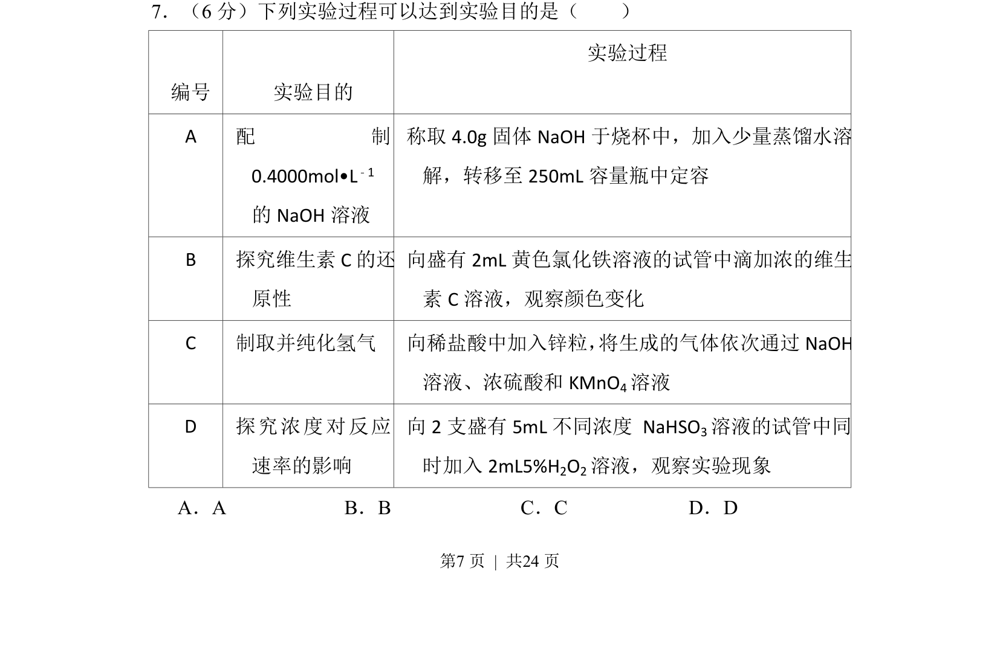
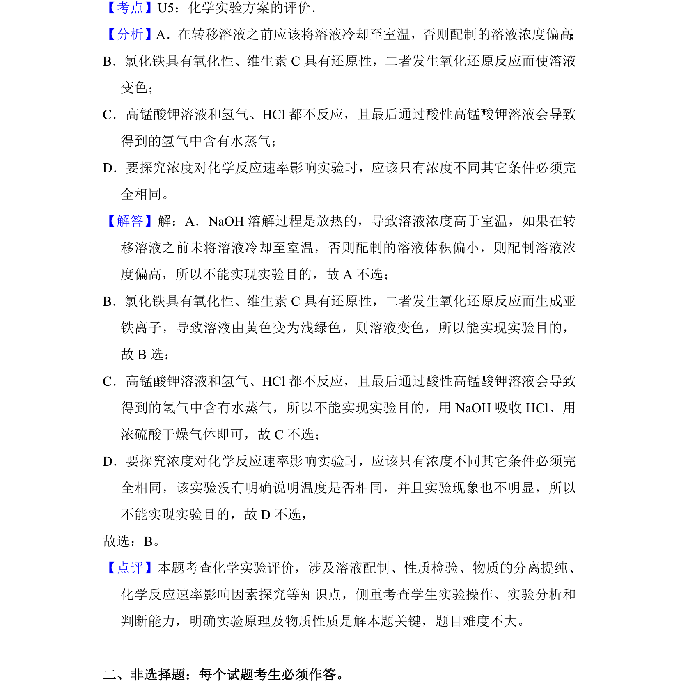

2018-新课标Ⅱ-07
考点：实验方案评价 一定物质的量浓度溶液配制 氧化还原反应 反应速率影响因素
题面


摘要
该题判断各实验方案能否达到目的，涉及实验操作与原理的匹配性
关联考点
答案与解析

📄 原 PDF 第 7 页：
素材/真题/吉林/2008-2024·（吉林）化学高考真题/2018年高考化学试卷（新课标Ⅱ）（解析卷）.pdf
题干文本
7．（6分）下列实验过程可以达到实验目的是（ ） 编号 实验目的 实验过程 A 配 制 0.4000mol•L﹣1 的NaOH溶液 称取4.0g固体NaOH于烧杯中，加入少量蒸馏水溶 解，转移至250mL容量瓶中定容 B 探究维生素C的还 原性 向盛有2mL黄色氯化铁溶液的试管中滴加浓的维生 素C溶液，观察颜色变化 C 制取并纯化氢气 向稀盐酸中加入锌粒， 将生成的气体依次通过NaOH 溶液、浓硫酸和KMnO 4溶液 D 探究浓度对反应 速率的影响 向2支盛有5mL不同浓度 NaHSO 3溶液的试管中同 时加入2mL5%H 2O2溶液，观察实验现象 A．A B．B C．C D．D